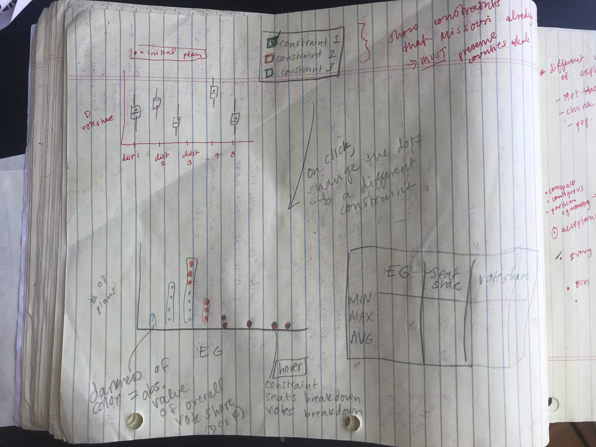
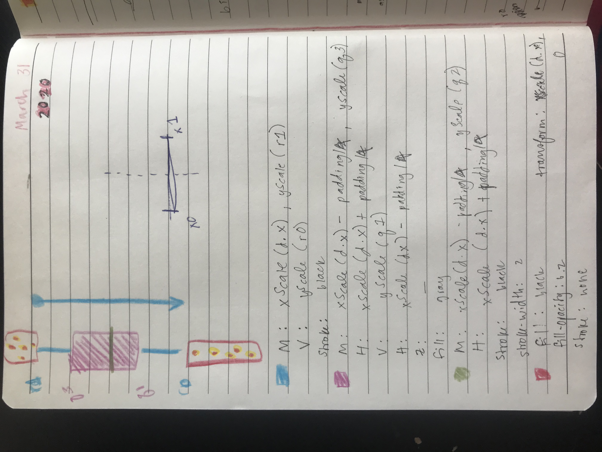

Process: A Million Maps of Missouri

This visualization was made for my work at the Princeton Gerrymandering Project. The efficiency gap is a metric that quantifies the extremity of a partisan gerrymander. In early 2020, legislators in Missouri proposed a constitutional amendment that would lower the efficiency gap floor to +/- 15%. My project aims to show what type of redistricting map such a floor would permit as legal.
Visit the completed website or view the source code.

Information Design
The data generated by running a chain provided a lot of information, and my goal was to let the user explore how each variable interacted with the others. Every row represented one possible redistricting plan, and I had information on the predicted vote share by district, state-wide seat share, and the efficiency gap for each plan. I decided to create three main components that would all interact with each other: a box-and-whisker plot summarizing the vote shares from the ensemble, a histogram displaying the spread of efficiency gaps, and a table to show the seat share for each data point. Below is one of my first sketches showing how I initially envisioned the final product.
The technical architecture helped me keep track of what needed to be re-drawn once a change was made by the user (i.e., new selection from the drop-down or click on a new dot). I followed this document very closely when I started coding in order to keep track of all of the moving parts!

One of the most challenging parts of this project was creating the box-and-whisker plots. Figuring out how to go from the raw data to bins using JavaScript was surprisingly difficult. Luckily, Mike Bostock shared an example of his version and that helped me figure it out.
Technical Overview
The data-generating process for this project was quite intensive. To create the final data I used GerryChain, a python library for using Markov Chain Monte Carlo methods to study the problem of political redistricting. The basic workflow is to start with the geometry of an initial plan (aka "initial partition") and generate a large collection of sample plans for comparison. I constrained these sampled plans based on contiguity and population deviation between districts. Comparing the initial plan to the ensemble provides quantitative tools for measuring whether or not it is an outlier among the sampled plans.
All of my data sources can be found in the README of this repository. To clean the data, I used a precinct-level map from 2016 matched with elections. I labelled each precinct with state senate and state house legislative districts, and aggregated the 2010 Census block-level population counts up to the precinct-level. The script to do the district labelling is here, and the script to do the population aggregation is here.
Running the actual chain took about 9 hours, because I wanted to try each ensemble with various population deviations (1%, 3%, and 5%) and compare the outcomes. I used this script to do the sampling, then randomly selected 2,000 data points from the final data to display on my visualization.